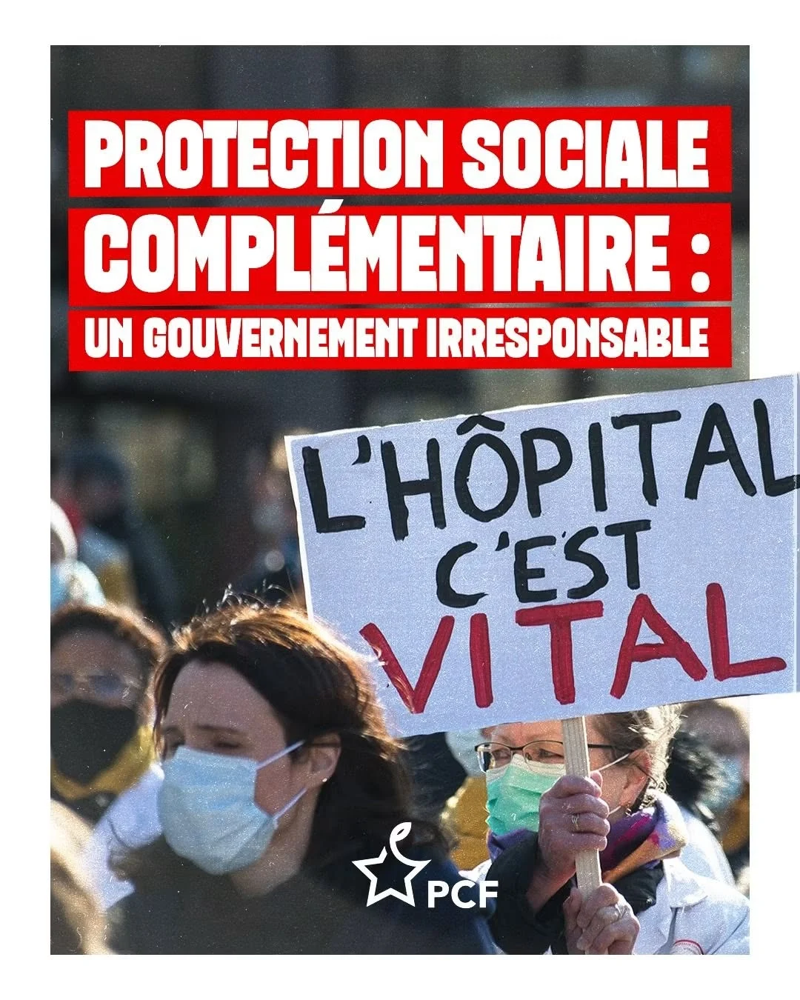

Publication relayée par le PCF 79
Le PCF demande des garanties pour la protection sociale des agents hospitaliers
Date de mise à jour indiquée par Facebook · 13 février 2026
Texte de la publication · PCF national
🏥 Le PCF critique la gestion gouvernementale des discussions sur la protection sociale complémentaire des agent·es hospitaliers : absence de méthode claire, pas de chiffrage ni d’études d’impact, calendrier imposé.
Sans garanties sérieuses d’ici le 19 février, la négociation relève de la mise en scène.
Nous alertons aussi contre le développement des complémentaires au détriment de la Sécurité sociale et appelle à un PLFSS 2027 à la hauteur des besoins de l’hôpital public et de ses personnels.
Retrouvez le communiqué complet en commentaire.

Sources
PCF national · publication relayée par le PCF 79 · bibliothèque Facebook · AR-0002-FB-00868
À lire aussi · Praticiens diplômés hors de l’Union européenne. Une pétition pour leur régularisation · Le lien d’origine